Professional
NKY Architects & Engineers · Ankara · 2023 – presentArchitectural Designer · NKY Architects & Engineers
Working on large-scale international projects across healthcare, diplomatic, research, office, mixed-use and public sectors. My work spans concept design, BIM coordination, computational design integration and technical documentation, contributing to complex projects from early design stages through project development.
Automation Tools
Three tools I built to take repetitive delivery work off the team. They run AutoCAD headless and write Excel directly, following office rules that are written down once and checked on every issue.
Last full delivery · 15 buildings · all three tools
about 40 person-days
active hours over 5 working days
473 drawings in the submission folder, 385 sets bound, 224 PDF sheets, 488 sheets added to the drawing list and 2,056 rooms listed. The team's own rough estimate was 10 people × 2 days; either way the delivery took 9 to 17 times fewer hours, including teaching the office rules to the tools for the first time.
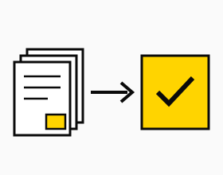
01 Delivery Sets Check · fix · bind · PDF · Open source- By hand
- ~160 h385 sets, 224 PDFs
- Re-issue
- ~30 minwas a team of 10 for a full day
Checks every set against the office rules (xrefs, naming, title block, draw order), fixes it, binds a clean copy and plots the PDFs. The rules are taught once, in one config.
See the tool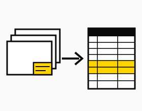
02 Drawing List (TML) Title blocks → Excel- By hand
- ~27 htyping and checking rows
- Sheets added
- 488in package order
Reads the title block of every delivered sheet and writes it into the Excel drawing list in the list's own style: package order, legends above their plan, numbering and row format kept.
See the tool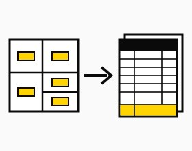
03 Room List (ID-RML) Room xrefs → Excel- By hand
- ~22 hextracting and checking
- Rooms listed
- 2,056from 44 room drawings
Extracts the room tags (code, name, area, finishes) from the room xrefs of every building and builds the room material list from the office template, one sheet per building.
See the toolSelected Projects
Information Technology City Communication Tower
- Location
- Lahore, Pakistan
- Area
- 26,500 sqm
- Type
- Multifunctional
- Status
- Concept
- Client
- Asian Consulting Engineers
Responsibilities
- Developed 3D models in Rhino and Grasshopper
- Produced analytical and presentation diagrams
- Designed and organized architectural plan layouts
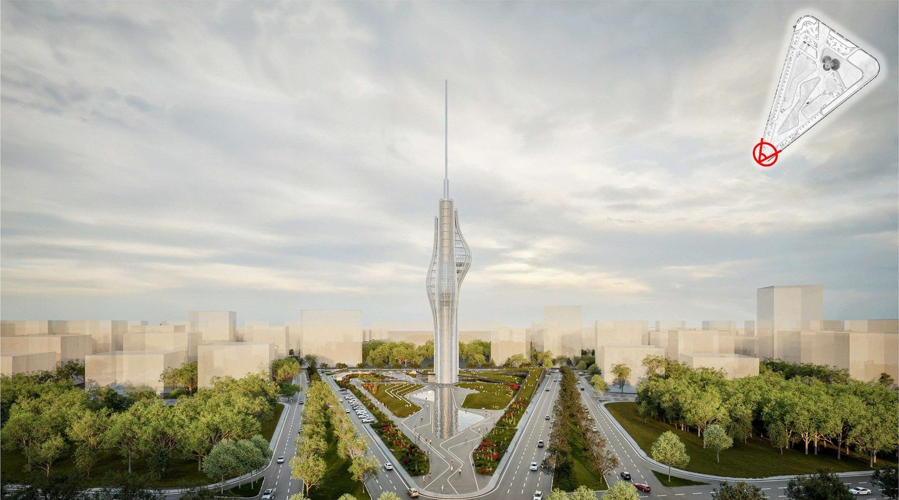
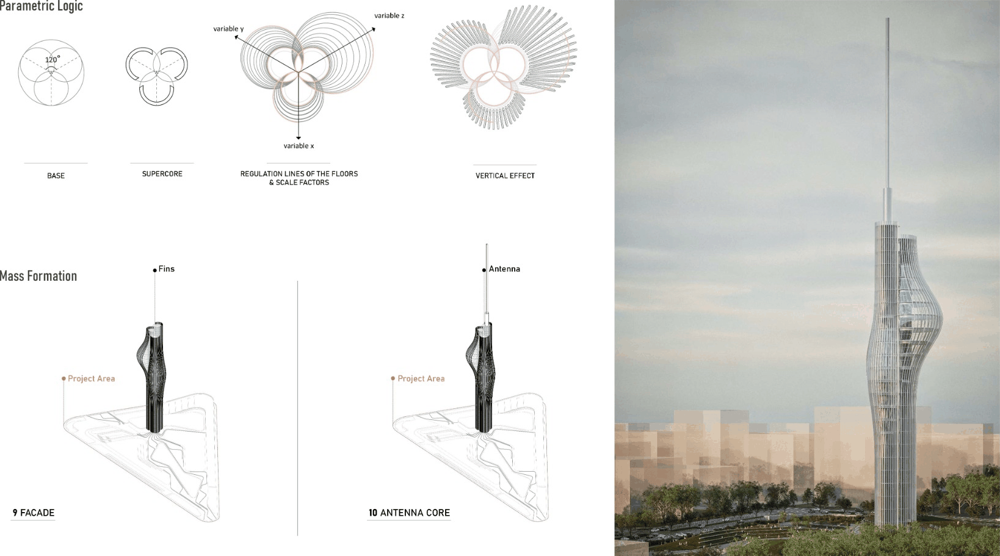
From three circles to a tower
Computational Logic · Rhino + Grasshopper
The whole tower comes from one Grasshopper definition I built in Rhino. Three circles set 120 degrees apart each become a lobe with its own floor stack, and a Gaussian graph curve scales every lobe floor by floor, so the three swell by different amounts at different heights and form the asymmetric bulb above a straight shaft. The scaled circles are lofted into glass and dressed with slabs, a mullion grid, sine-depth fins and a stepped antenna core. The functions stacked in the bulb are design intent from the board, not modelled.
Tools: Rhino · Grasshopper · Definition: six graph mappers, 10 lofts, one 540 floor module · My role: parametric 3D model, analytical diagrams, plan layouts
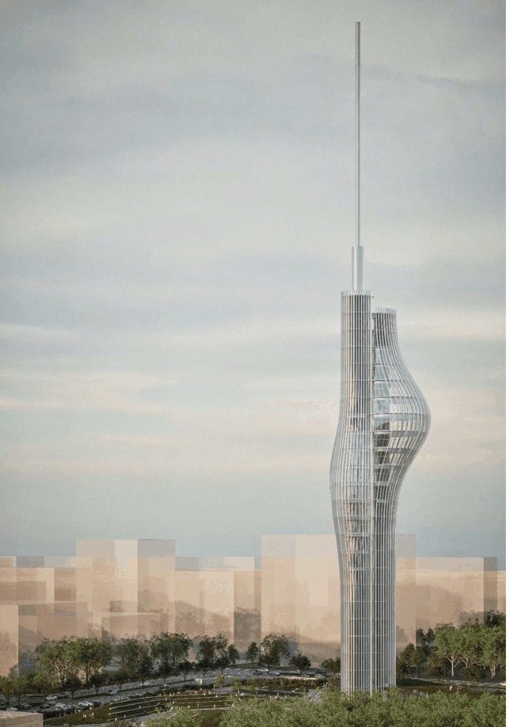
Three circles set 120 degrees apart, each passing through the tower axis and together filling one bounding circle. The lobes run on three circles referenced from the Rhino model.
Three core pieces from the Rhino plan, one per lobe, are extruded up their own lobe's floor stack, so the core tops step at different heights.
Each lobe circle is copied up at one shared floor height: 20, 19 and 21 levels, which gives the three lobes their stepped tops.
Floor by floor, a Gaussian graph curve scales each lobe outward from its anchor on the axis. Peaks of 2.38, 1.84 and 1.48 at different levels give a straight shaft, an uneven bulb and a slim top.
Each lobe's scaled circles are lofted into its own glass skin: three overlapping tubes, continued four floors below the first level.
On every level a slab 100 thick is set back 40 inside the glass line, and a thin ledge ring reaches 100 beyond it, where the fins start.
Each glass skin is divided 135 by 40 and the cell edges are piped into one continuous mullion and transom grid.
Each lobe's outer arc is divided into 22 and fins run out radially from the lobe centre. A sine graph keeps them shallow where lobes meet and deepest mid arc, and they rise 150 above the roof as a parapet.
The top of the tallest lobe is scaled to half and extruded, then scaled again and extruded twice as far, giving the stepped antenna core. The spire needle is not part of the definition.
Office Headquarters, Central Bank of the Gambia
- Location
- Gambia
- Area
- 40,000 sqm
- Type
- Office
- Status
- Concept
- Client
- Confidential
Responsibilities
- Developed 3D models in Rhino and Grasshopper
- Produced analytical and presentation diagrams
- Designed and organized architectural plan layouts
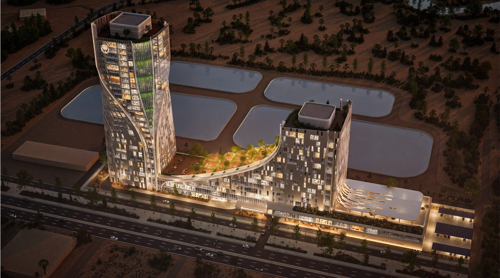
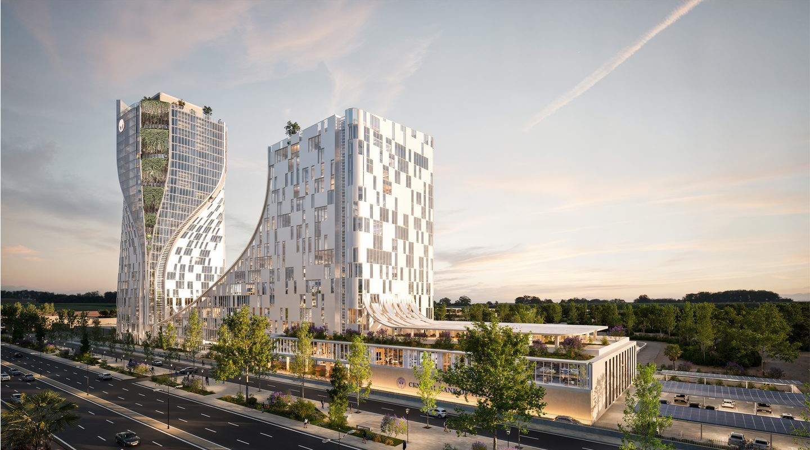
A facade that unzips as it climbs
Computational Logic · Rhino + Grasshopper
Both masses come from one Grasshopper definition I built in Rhino. A filleted floor plate is stacked up the height and its perimeter is split into strips; rising floor by floor, each strip is pushed out from a corner by an amount read off a graph curve and rotated into a curl, so the skin unzips as it climbs and opens onto the curved glass tower and green terraces behind. The same logic runs again with fewer floors for the shorter block, and the peeled strips sweep down into a shared podium.
Tools: Rhino · Grasshopper · Definition: two floor stacks (26 and 15 levels), five graph mappers, 22 lofts · My role: parametric 3D model, analytical diagrams, plan layouts
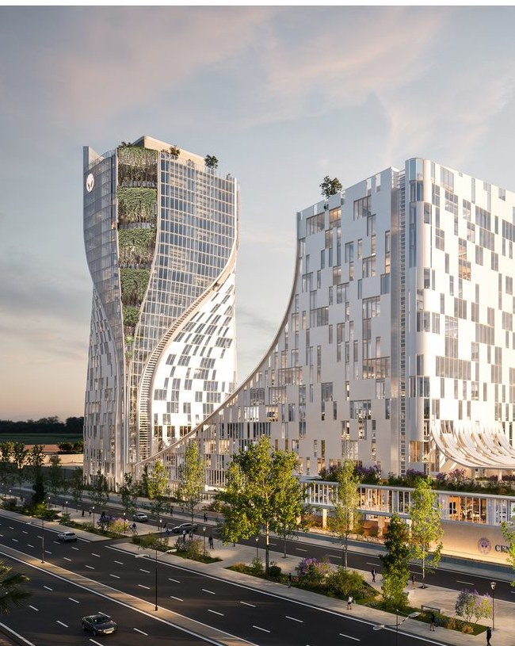
Plan footprint with filleted corners, the seed profile for both masses.
The profile is copied up by floor count and floor height: 26 levels for the tower, 15 for the short block.
Each level's perimeter is split into four strips, the layers that will separate from the glass skin.
Rising up the tower, each strip is pushed out from one corner. A graph curve sets how far, low, mid and top, so the facade unzips as it climbs.
The strips rotate about their corner end point, 0 to 45 degrees, giving the peel its bend and curl.
The level curves are lofted into the peeling white skin and the glass tower behind; one facade is panelled into the punched window pattern.
The same logic runs again with fewer floors for the shorter block. Nothing is scaled: 15 levels against 26.
A slab on every level, some culled for terraces and voids, around one core lofted the full height.
The strips sweep down into the shared podium: public banking hall, lobby and security, a conference hall and a café.
National Technology & Science Museum
- Location
- Ankara, Türkiye
- Area
- 15,000 sqm
- Year
- 2025
- Type
- Museum
- Status
- Concept
Responsibilities
- Developed 3D models in Rhino and Grasshopper
- Produced analytical and presentation diagrams
- Designed and organized architectural plan layouts
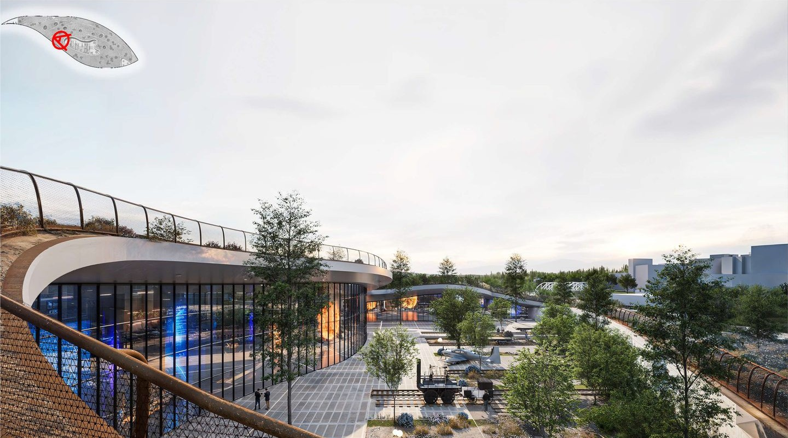
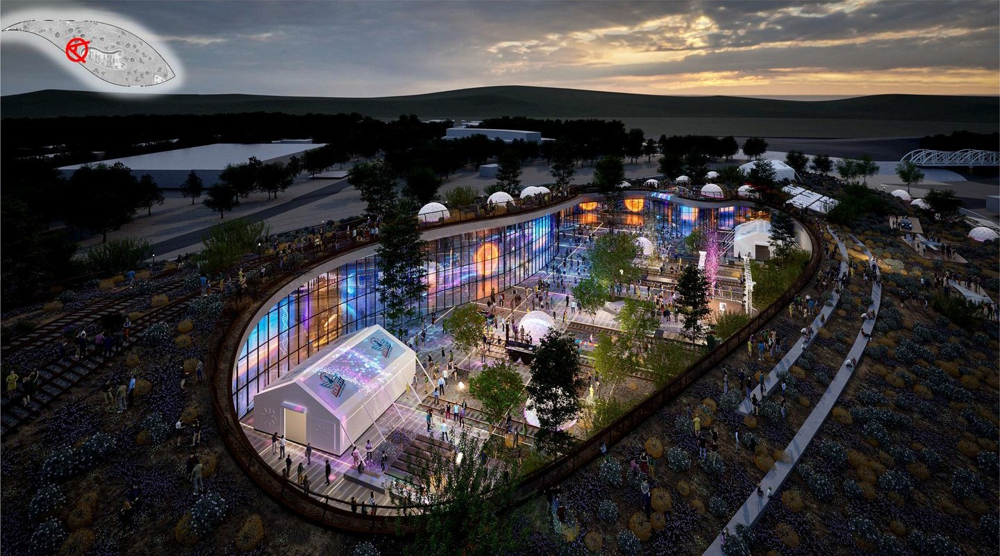
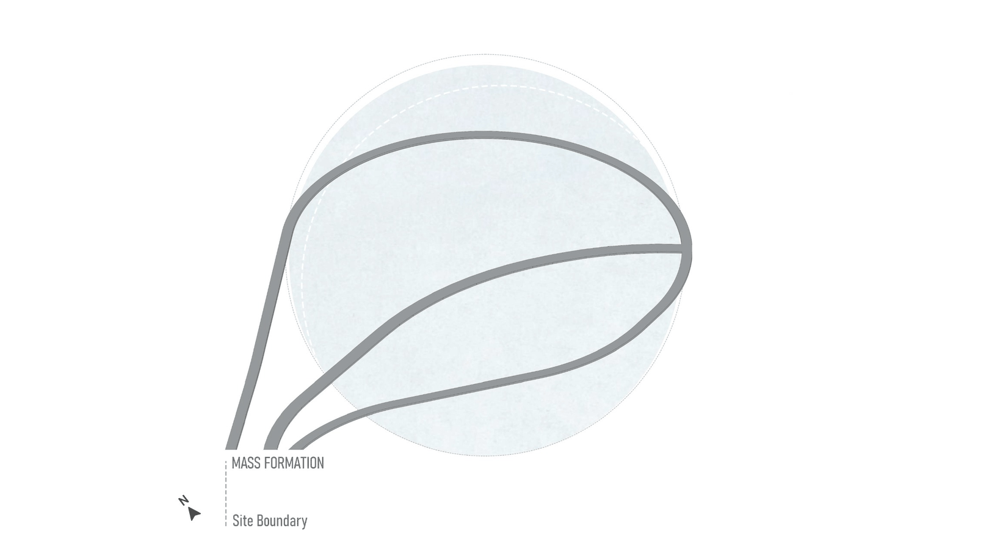
A museum dug beneath the TODAY layer
Computational Logic · Rhino + Grasshopper
The site is historically charged, so the museum is dug into it rather than built on top. A new TODAY layer is laid over the existing buildings and trees, the usable area is cleared 3.00 m below it without harming the historic fabric, and every mature tree keeps its own ground. The rail tracks that wrap the site carry into the design: I continued their curvature in Grasshopper and mapped the new tracks onto the landscape. Around the openings the edge rises as glass and then flares into a parabolic mesh railing, all driven from one top curve.
Tools: Rhino · Grasshopper · Definition: rail curves mapped with Flow Along Surface and Project, one top curve driving the glass and mesh edge · My role: parametric 3D model, analytical diagrams, plan layouts
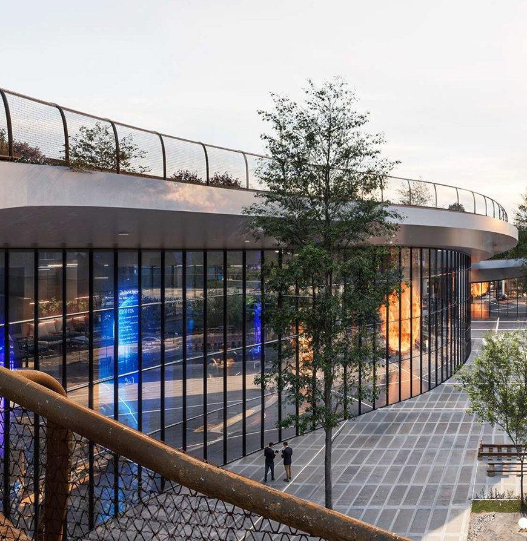
The site is historically charged ground wrapped by a rail loop. Existing buildings and mature trees are recorded first.
A new TODAY layer is laid over the existing site as the datum everything else is built on.
Inside the layer the usable area is defined at a depth of 3.00 m.
Soil and buildings are removed inside the area without touching the historic fabric. The mature trees stay on their own ground.
The curvature of the rail loop is continued in Grasshopper, so new tracks follow the same flow across the site.
The tracks are mapped onto the landscape with Flow Along Surface or Project and given a thickness, becoming built landscape elements.
Where the ground opens, around the sunken hall and where trees rise, the edges become glass surfaces.
The top curve of the glass is taken and every point is extended along its circular, parabolic continuation. Past a point it is scaled so the upper edge flares a little wider.
Above the glass the surface becomes a mesh with metal details at the joints, and railing posts are set every 140 cm along it.
TPAO Campus
- Location
- Şırnak, Türkiye
- Area
- 80,000 sqm
- Status
- Concept to application
- Client
- Turkish Petroleum Corporation
Responsibilities
- Developed the 3D site model
- Produced analytical and presentation diagrams
- Designed and organized plan layouts of the guesthouse, staff housing and guard houses (preliminary design)
- Set of architectural drawings: floor plans, sections, elevations, reflected ceiling, floor and wall cladding plans, wall plans, system, wet and curtain wall details (AutoCAD)
- Structural, electrical and mechanical coordination
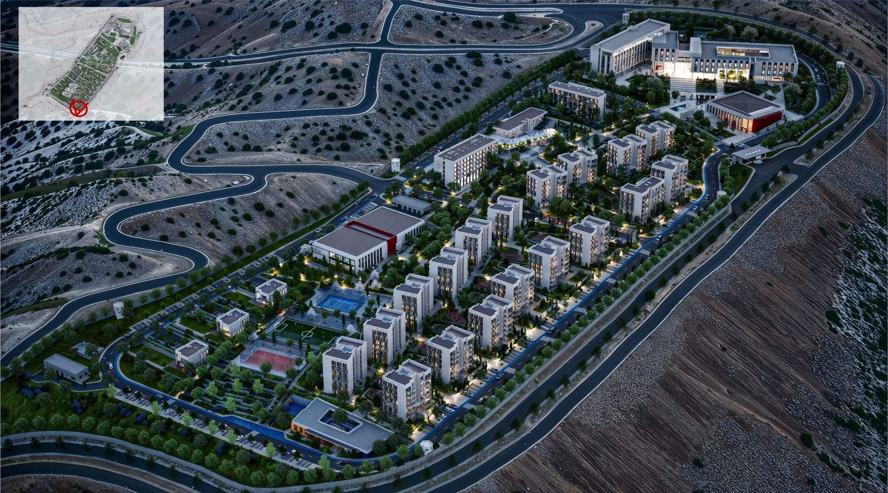
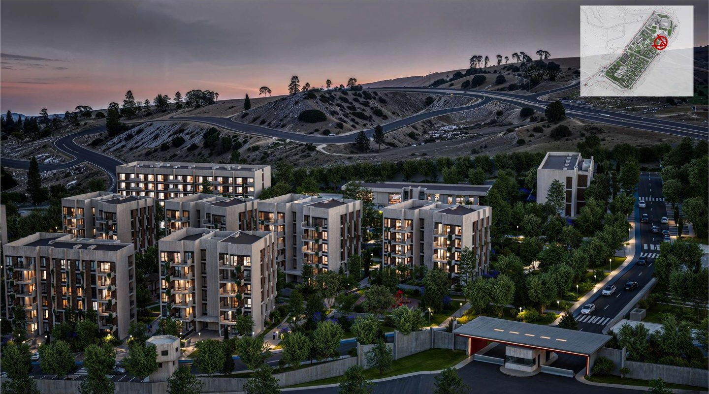
Başkent Electricity Headquarters
- Location
- Ankara, Türkiye
- Area
- 80,000 sqm
- Status
- Concept to application
- Client
- Başkent Elektrik Corporation
Responsibilities
- Developed 3D alternative models
- Produced analytical and presentation diagrams
- Set of architectural drawings: floor plans, sections, elevations, reflected ceiling, floor and wall cladding plans, wall plans, system, wet and curtain wall details (AutoCAD)
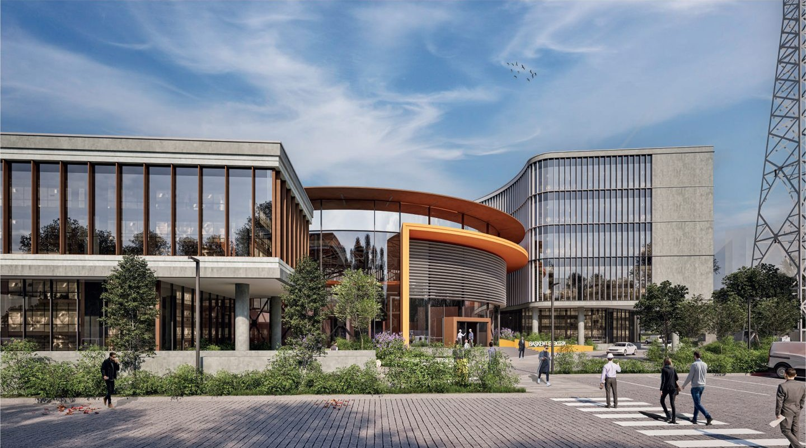
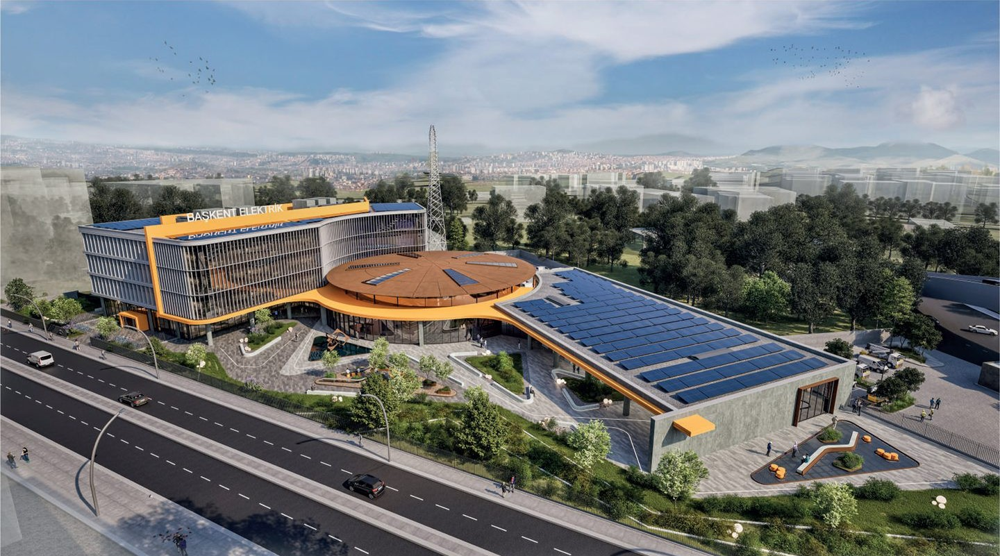
VR Krtsanisi Resort Residence
- Location
- Tbilisi, Georgia
- Area
- 18,000 sqm
- Status
- Concept to application
- Client
- VR Holding
- Award
- Property Design Awards, rank 1
Responsibilities
- Produced analytical and presentation diagrams
- Set of architectural drawings: floor plans, sections, elevations, reflected ceiling, floor and wall cladding plans, wall plans, system, wet and curtain wall details (AutoCAD)
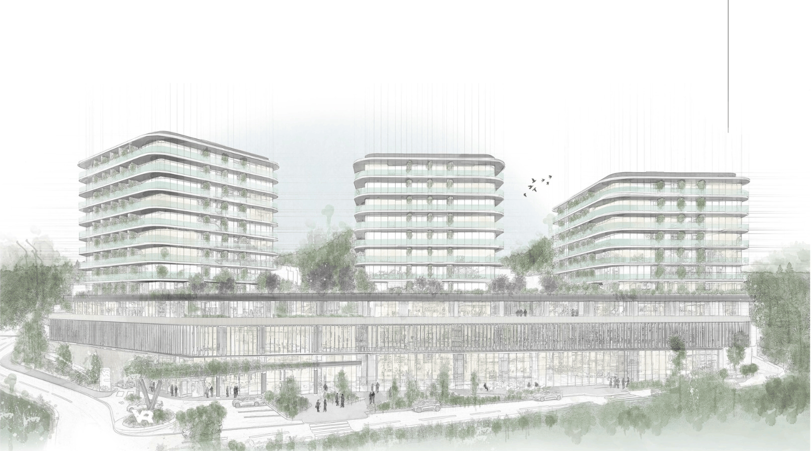
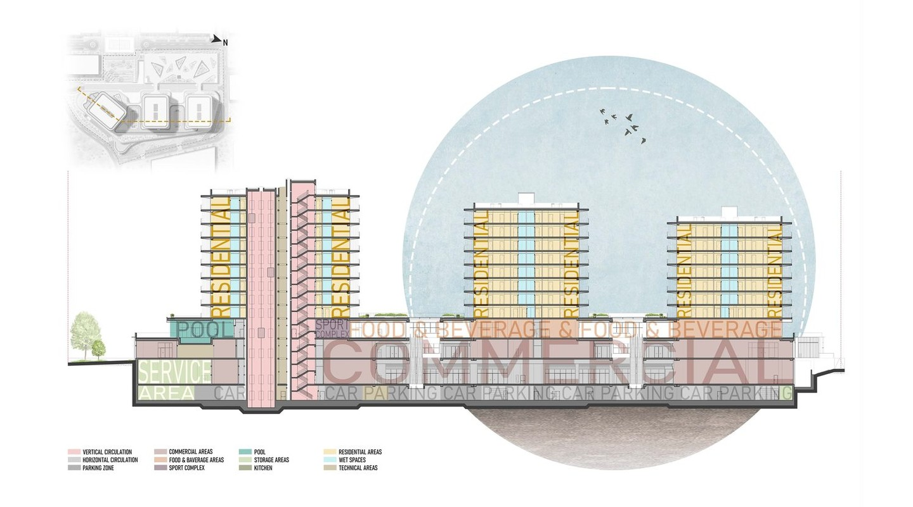
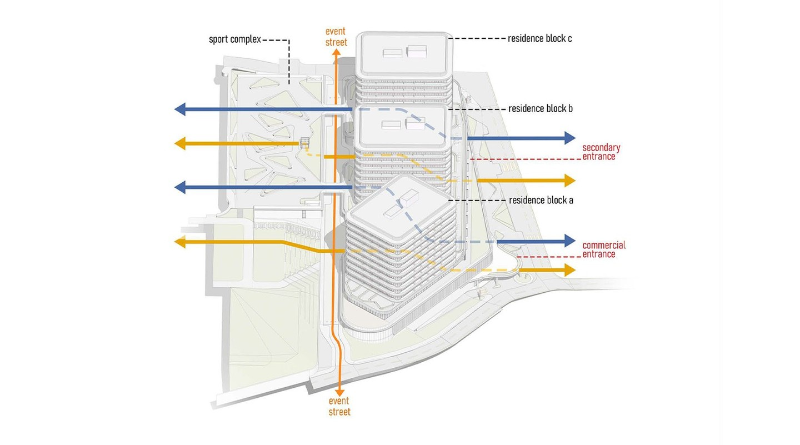
Chancery Building & Residential Complex
- Location
- Ankara, Türkiye
- Area
- 5,000 sqm
- Status
- Concept to application
- Client
- Embassy (confidential)
Responsibilities
- Converted the model from Archicad to Revit using Grasshopper
- BIM modelling (preliminary design)
- Produced analytical and presentation diagrams
- Set of architectural drawings: floor plans, sections, elevations, reflected ceiling, floor and wall cladding plans, wall plans, system, wet and curtain wall details (AutoCAD, design development)
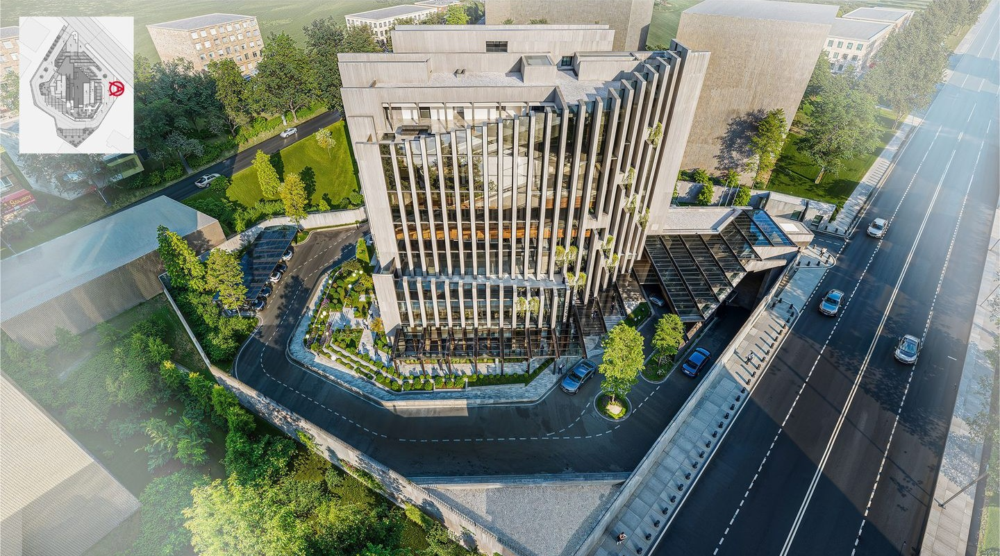
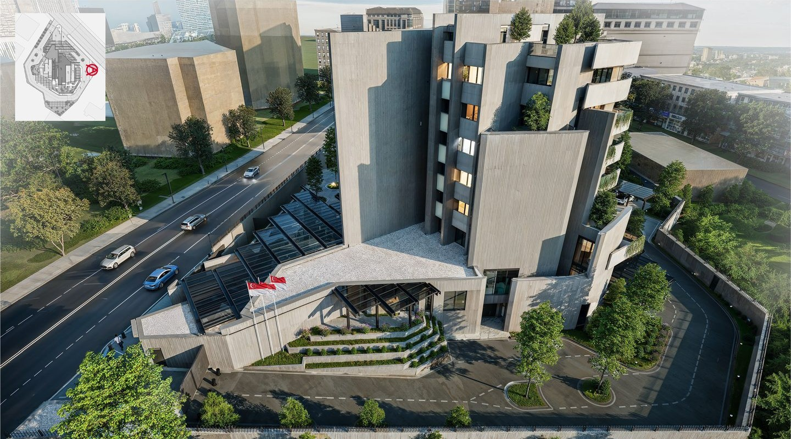
Adaptive Reuse for Enriching the Heritage
- Location
- Kerkijihan, Azerbaijan
- Type
- Urban complex
- Status
- Concept
- Client
- Embassy (confidential)
Responsibilities
- 3D modelling in Revit (concept)
- Produced analytical and presentation diagrams
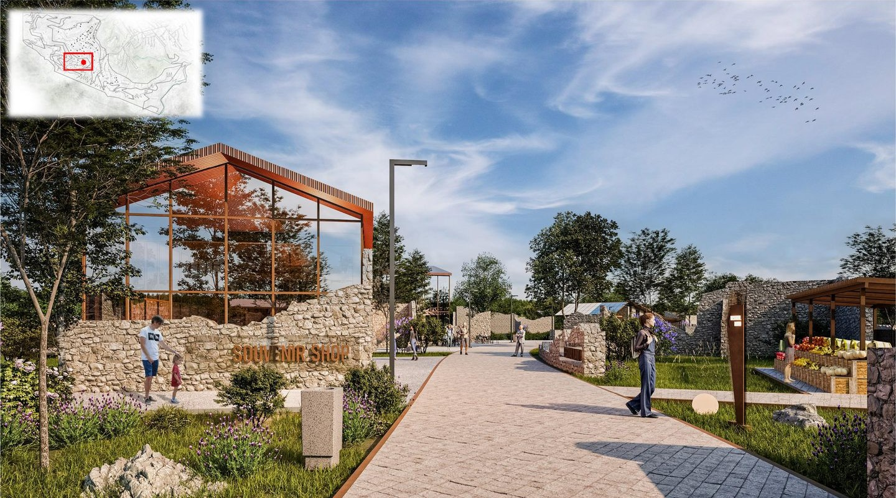
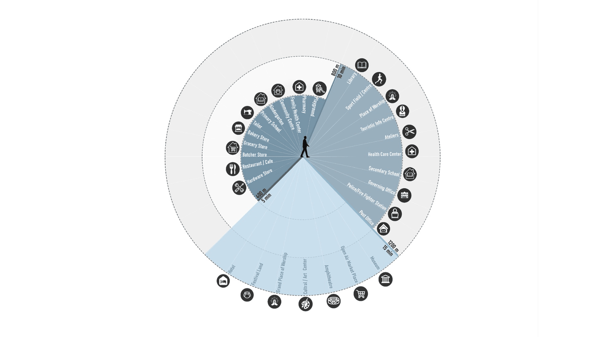
Ankara University State Hospital
- Location
- Ankara, Türkiye
- Area
- 22,000 sqm
- Type
- Healthcare
- Status
- Concept
- Client
- Governmental
Responsibilities
- 3D modelling in Revit (concept)
- Produced analytical and presentation diagrams
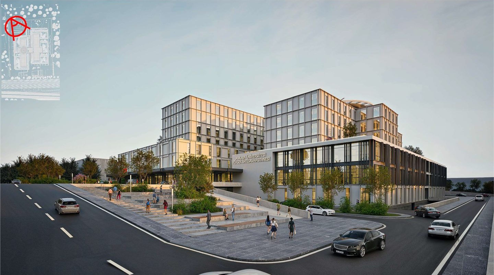
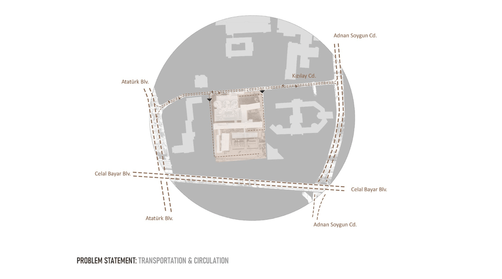
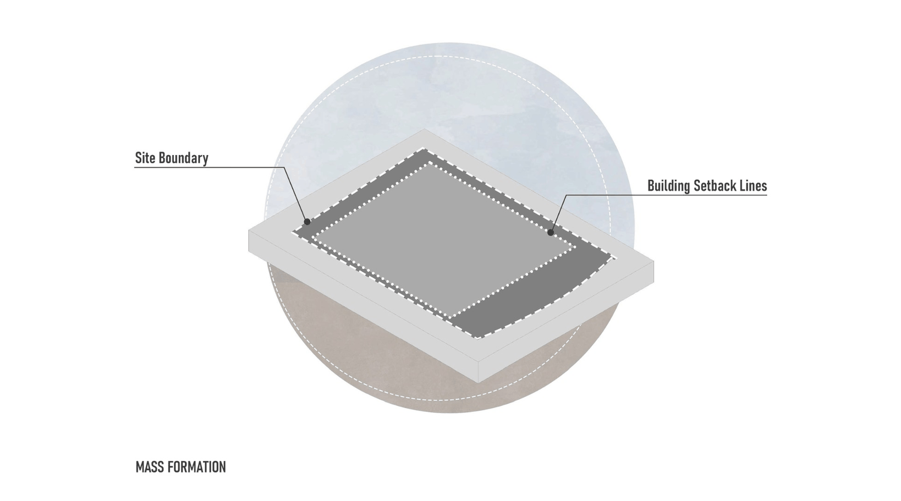
A Ministry: Rooted from Local Values
- Location
- Bakau, Gambia
- Area
- 20,000 sqm
- Type
- Ministry complex, governmental
- Status
- Concept
Responsibilities
- 3D modelling of the canopy in Grasshopper
- Produced analytical and presentation diagrams
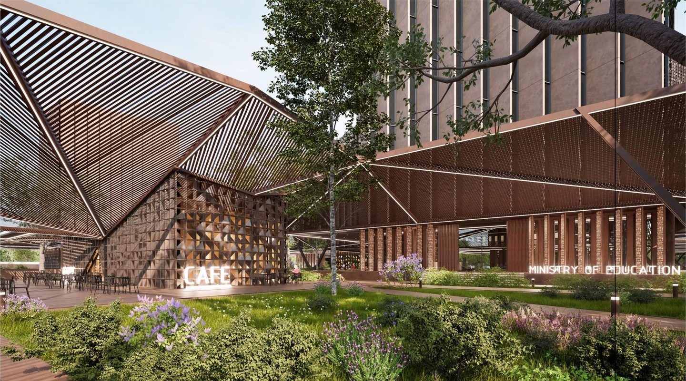
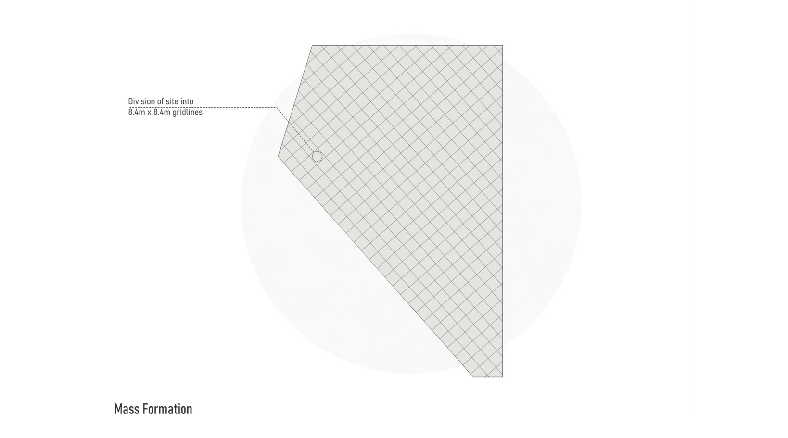
Municipality Additional Service Building
- Location
- Tokat, Türkiye
- Area
- 8,000 sqm
- Type
- Office, governmental
- Status
- Preliminary design
- Client
- Municipality
Responsibilities
- Produced analytical and presentation diagrams
- Designed and organized architectural plan layouts
- Set of architectural drawings: floor plans, sections, elevations, reflected ceiling, floor and wall cladding plans, wall plans and wet details (AutoCAD)
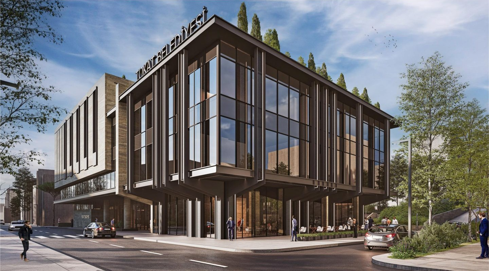
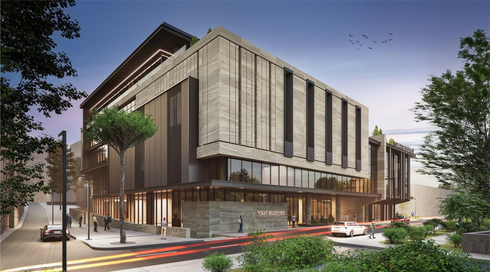